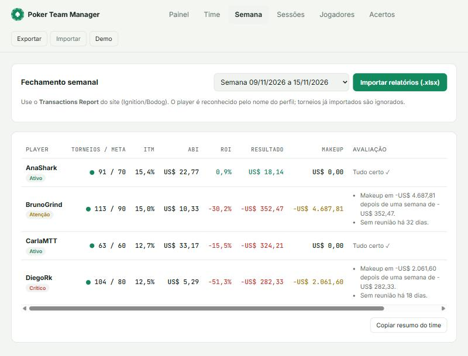
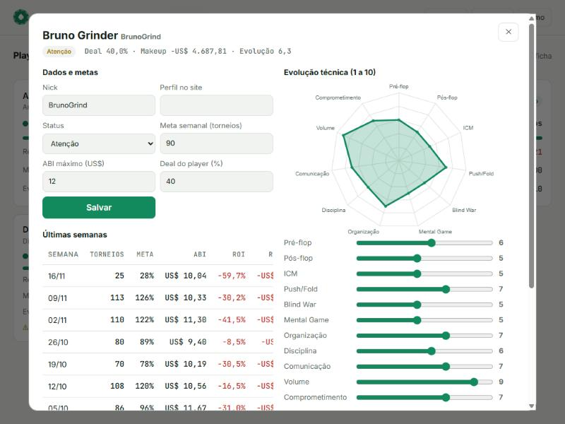

Poker · Gestão
Poker Team Manager
Painel para gerenciar um time de poker com stake. Importa o relatório semanal do site de cada player, mede o volume contra a meta com semáforo, aponta alertas (volume baixo, ABI acima do combinado, makeup crescendo, player sem reunião) e gera o resumo pronto para mandar no WhatsApp.
- Ficha do player com radar de evolução em 11 competências e histórico de reuniões
- Acerto de pacote com makeup em um clique
- Sem build: HTML, CSS e JavaScript puro, 22 testes com
node:test

